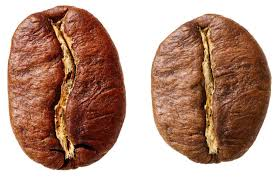

Cualidades de los Granos de Café
Los granos de café tienen diferentes características de sabor según la parte del mundo en que se cultiven. Altitud, temperatura y suelo, incluso la cosecha, también desempeñan un papel importante. Tostar los granos de café produce aún más notas y matices de sabor. Cuando se trata del café en la taza, solo hay dos tipos de grano que importan: Arábica y Robusta.